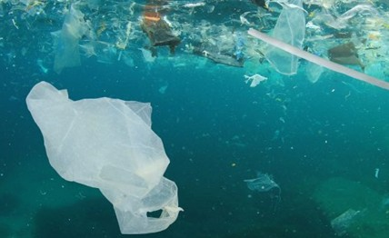
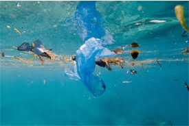

 
Ways to help stop water pollution
Water pollution is a serious problem, but the good news is that there are many simple actions we can take to help reduce it.
- One of the most effective ways is by properly disposing of waste. That means never pouring oil, paint, or chemicals down the drain, as these can end up in rivers and oceans. Instead, take hazardous materials to a local recycling or disposal center. Even small changes, like picking up pet waste and putting litter in the bin, help keep harmful bacteria and plastics out of waterways.
- Another way to help is by reducing the use of harmful products at home and in the garden. For example, using natural cleaning products or limiting fertilizers and pesticides in your yard can prevent toxic runoff from washing into streams when it rains. Planting more native plants in your garden can also help absorb rainwater and stop soil erosion, which keeps local water cleaner and healthier for fish and wildlife.
- Getting involved in community cleanups is another powerful way to make a difference. Local beach, river, and lake cleanups help remove trash before it can break down into microplastics or harm animals. It’s also a great way to raise awareness about pollution and inspire others to take action. Even talking with friends and family about the issue can spread the message and create positive change.
-
- Finally, being mindful of water use in general can help reduce pollution. Fixing leaks, turning off taps, and using water-efficient appliances not only conserve water but also reduce the strain on wastewater treatment systems. When less water goes down the drain, there’s less chance for pollution to reach our rivers, lakes, and oceans. Every small action adds up—and the cleaner we keep our water, the healthier our communities and ecosystems will be.
Related video